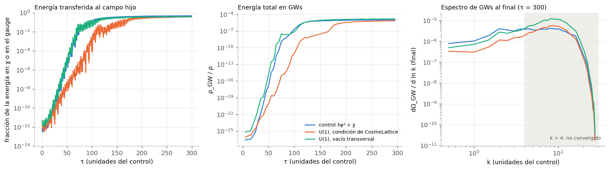
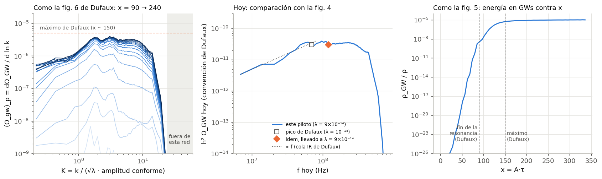
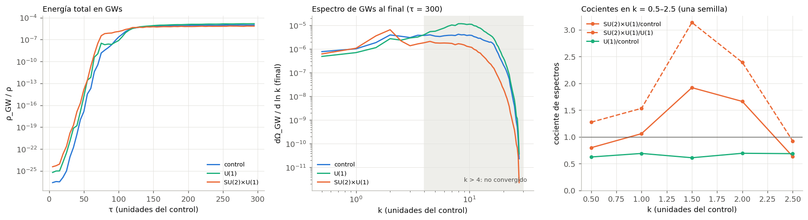
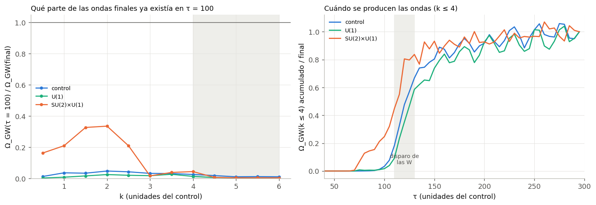
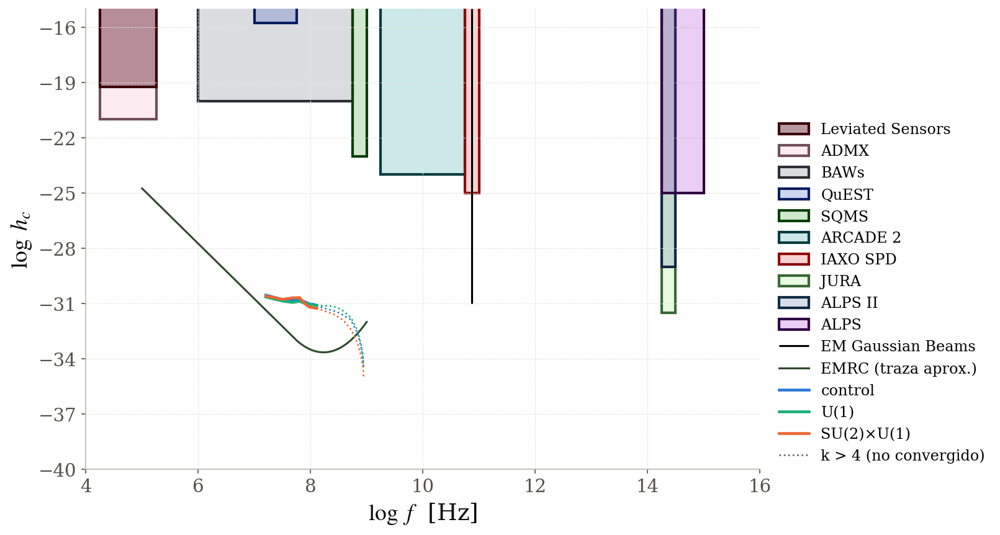

Del fin de la inflación a un fondo de ondas gravitacionales
Al terminar la inflación, el inflatón φ oscila y le pasa su energía a otros campos de golpe, por resonancia
(preheating). Ese proceso violento produce ondas gravitacionales (GWs).
Pregunta: ¿cuánto de la forma del espectro de GWs (altura, pico, pendientes) se debe a que
el campo que recibe la energía es de gauge, con todo lo demás fijo?
Por qué: casi todo lo publicado supone campos escalares, pero si el inflatón se acopla como el Higgs,
la energía iría a campos de gauge (W, Z, fotón).
Cómo: tres modelos de CosmoLattice emparejados: misma energía inicial, misma intensidad de
resonancia (q = 120), misma red física.
Campos de gauge y GWs · T. Ciccarella2 / 7
Lo que hubo que resolver primero
CosmoLattice arranca los campos de gauge «vacíos»
El campo escalar arranca con fluctuaciones cuánticas de vacío; el campo de gauge, sin sus modos transversales,
que son los que resuenan. La resonancia llega tarde y la comparación no sería justa.

control · U(1) como arranca CosmoLattice ·
U(1) con el parche. Izq.: energía que recibe el campo; der.: energía en GWs.
Sin corregir: la resonancia llega al 1 % de la energía en τ = 105 (control: 68) y las GWs salen
a 0,3–0,4×. Sería un artefacto, no física.
Parche 1 (U(1)): agrega el vacío transversal sin romper la ley de Gauss → resuena a la par del control.
Parche 2 (SU(2)×U(1)): los campos se mezclan como fotón, Z y W; el parche arma el vacío de cada
uno. La primera versión, sin la mezcla, era inestable: así lo descubrimos.
Campos de gauge y GWs · T. Ciccarella3 / 7
Resultado principal
El campo de gauge cambia la altura y la forma del espectro
Espectro final de GWs en la parte confiable (k ≤ 4), siete corridas: tres modelos y varias semillas aleatorias.
Color: modelo; tipo de línea: semilla aleatoria.
U(1): 0,56–0,79× las GWs del control
(tres semillas). Mismo mecanismo; produce menos porque el campo se lleva menos energía (40 % contra 48 %).
SU(2)×U(1): aparece un pico en k = 2,
1,7–1,9× más alto que el control, y después cae. Se produce antes, cuando satura la resonancia de la «Z»;
no viene de las W, que resuenan tarde.
SU(2)×U(1) tiene una sola semilla (9 h 20 min por corrida): falta confirmarlo con otras.
Hoy el pico quedaría en h²ΩGW ~ 10⁻¹⁰ a ~10⁸ Hz, lejos de los detectores actuales.
Campos de gauge y GWs · T. Ciccarella4 / 7
Validación
¿Cómo sé que los resultados son confiables?
Primero, reproducir un resultado conocido; después, controlar cada paso contra algo independiente.

El control, llevado a hoy, contra el pico de Dufaux et al. (2007): 3,8×10⁻¹¹ a 9,7×10⁷ Hz
contra ≈ 3×10⁻¹¹ a 1,2×10⁸ Hz.
qué
contra qué
Control
Paper de referencia (Dufaux 2007) y teoría de Floquet: μ = 0,200 medido, 0,199 esperado
Resolución
Seis redes distintas: solo k ≤ 4 converge → solo comparo ahí
Unidades y parámetros
Álgebra simbólica (sympy) contra el código de CosmoLattice
Parches
Misma semilla, energía inicial analítica (3 %), ley de Gauss a 3×10⁻⁷
Cada corrida
Ley de Gauss ≤ 10⁻⁶ y ecuación de Friedmann ≤ 4×10⁻⁴
Azar
Tres semillas para el control y para U(1): el control varía hasta 34 % por punto
Campos de gauge y GWs · T. Ciccarella5 / 7
Experiencia y aprendizajes
Lo que le recomendaría a alguien que arranca
Lo que más me sirvió durante el proyecto:
Los valores por defecto no son neutrales. El hallazgo principal salió de preguntar
«¿por qué U(1) resuena tarde?» y leer cómo arranca el código, en vez de aceptar el resultado.
Pruebas baratas antes de las caras. Medir el costo antes (SU(2)×U(1) a N = 128:
~86 h → descartado) y probar resoluciones: N = 64 con la caja a la mitad da lo mismo que N = 128, 8× más rápido.
Obligar al agente de IA a dejar registro. Un hook de Claude Code no lo deja terminar si produjo un número
o una figura sin anotar qué script lo generó y cómo se verificó. Un script rehace todo el análisis en 2,5 min.
Una bitácora en lenguaje llano, al día: sirve para retomar al día
siguiente y para explicar el proyecto a alguien que no es de física. También las notificaciones al celular cuando
termina una corrida de 9 h.
Campos de gauge y GWs · T. Ciccarella6 / 7
En resumen
Conclusiones
Con el resto del modelo fijo, que el campo sea de gauge cambia el espectro de GWs de forma medible.
U(1): el espectro confiable baja a 0,56–0,79× el del control y se inclina hacia las
ondas cortas. La causa: el campo se lleva menos energía, no un mecanismo distinto.
SU(2)×U(1): fotón, Z y W; aparece un pico en k = 2, 1,7× más alto, producido antes.
Técnico: CosmoLattice arranca los campos de gauge sin modos transversales, lo que reduce las GWs a la mitad.
Los dos parches están verificados y publicados.
Limitaciones: nada sobre k > 4 ni sobre la energía total en GWs; SU(2)×U(1) con una sola semilla.
Referencias: Figueroa et al., arXiv:2006.15122 y 2102.01031 (CosmoLattice);
Baeza-Ballesteros et al., arXiv:2607.24978 (CosmoLattice 2.0); Dufaux et al., arXiv:0707.0875.
Las diapositivas que siguen son de respaldo, para las preguntas.
Respaldo · resultados
Los tres modelos en números
Misma red y mismos parámetros; tiempos y números de onda en unidades del control.
control (χ)
U(1)
SU(2)×U(1)
El campo que resuena llega al 1 % de la energía (τ)
68,3
68,1
68,1 (Z); 117 (W)
μ del campo en la fase lineal (Floquet con q = 120: 0,20)
0,20
0,21
0,21 (Z)
Fracción de la energía en el campo al final
48 %
40 %
64 % (31 % Z + fotón, 32 % W)
Espectro de GWs en k = 0,5–2,5, respecto del control
1
0,56–0,79 (3 semillas)
0,64–1,92; 1,7–1,9 en k = 1,5–2 (1 semilla)
Forma en k = 2–4 (pendiente)
casi no cambia (0,09 ± 0,12)
sube (0,55 ± 0,12)
pico en k = 2, cae (−1,8)
La dispersión entre semillas del control llega a 34 % por punto del espectro; por eso
el resultado de U(1) se da como rango. SU(2)×U(1) tiene una sola semilla.
Campos de gauge y GWs · T. CiccarellaR1
Respaldo · el arranque de los campos de gauge
U(1) con el arranque de CosmoLattice y con el parche
control · U(1) como lo arranca CosmoLattice ·
U(1) con vacío transversal. Izquierda: fracción de la energía en el campo hijo o gauge. Centro:
energía en GWs. Derecha: espectro final; la zona gris (k > 4) no está convergida.
Sin parche, la resonancia llega al 1 % de la energía en τ = 105 (control: 68) y produce 0,3–0,4 veces las GWs del control.
Con el parche va a la par del control, con el mismo μ. Validación: ruido del inflatón idéntico (10⁻¹⁵), energía
agregada igual a la analítica (3 %), ley de Gauss a 3×10⁻⁷ y vacío estacionario.
Campos de gauge y GWs · T. CiccarellaR2
Respaldo · SU(2)×U(1)
Adónde va la energía: la Z resuena enseguida, las W tarde
Fracción de la energía en χ (control), en A (U(1)) y en los gauge de
SU(2)×U(1) (guiones: Z + fotón; puntos: W). La franja gris marca dónde la separación no vale
(término cruzado Z·fotón).
La Z resuena como χ (1 % en τ = 68, μ = 0,21). Las W casi no resuenan al principio (μ ≈ 0,07, banda angosta con
q = 60) y se disparan cuando todo ya es no lineal (μ ≈ 0,18 en τ = 100–125).
Al final los gauge se llevan 64 % de la energía, contra 48 % de χ y 40 % de A.
Campos de gauge y GWs · T. CiccarellaR3
Respaldo · ondas gravitacionales
Las GWs en los tres modelos

Semilla 1234. Izquierda: energía total en GWs contra τ. Centro: espectro final. Derecha: cocientes en la parte
confiable (k = 0,5–2,5). La energía total está dominada por k > 4 (no convergido) y no se usa como resultado.
SU(2)×U(1) supera al control cerca de k = 2 (1,7–1,9 en k = 1,5–2); U(1) queda por debajo en toda la parte confiable.
Hoy, el máximo quedaría en h²ΩGW ~ 10⁻¹⁰ a ~10⁸ Hz en los tres modelos, lejos de los detectores actuales.
Campos de gauge y GWs · T. CiccarellaR4
Respaldo · cómo se producen las GWs
SU(2)×U(1) produce sus ondas antes

Izquierda: parte de las GWs finales que ya existía en τ = 100, por k. Derecha: GWs acumuladas (k ≤ 4) contra τ;
la franja gris es el disparo de las W.
Cuándo: en τ = 100 SU(2)×U(1) ya tenía el 25 % de sus GWs finales y en τ = 120 el 80 % (control: 3 % y 48 %).
El exceso sale cuando satura la resonancia de la Z, no de las W.
Mismo mecanismo: en la fase lineal la energía en GWs crece 1,76–1,88 veces más rápido (en escala log) que la del
campo; se espera 2. Eficiencia respecto del control: U(1) 0,94; SU(2)×U(1) 1,31 (tendencia).
Campos de gauge y GWs · T. CiccarellaR5
Respaldo · validación
Cómo se verificó cada resultado
resultado
cómo se verificó
Unidades, normalizaciones, ley de Gauss inicial
Álgebra simbólica (sympy) contra el código y la teoría de CosmoLattice
Control
Dufaux et al. (2007) y Floquet (μ al 0,4 %)
Resolución
Seis corridas con distinta N y caja; k > 4 descartado
Parches
Pruebas con la misma semilla, energía analítica, vacío estacionario, prueba ×1000
Cada simulación
Ley de Gauss (≤ 10⁻⁶) y ecuación de Friedmann (≤ 4×10⁻⁴) en toda la corrida
U(1) contra control
Tres semillas por modelo
SU(2)×U(1)
Una semilla, comparada con la dispersión de las otras seis corridas
Limitaciones: nada sobre k > 4 ni sobre la energía total en GWs; una sola
semilla de SU(2)×U(1) (~9 h cada una); falta separar si el exceso lo causa el fotón o las interacciones propias de SU(2).
Campos de gauge y GWs · T. CiccarellaR6
Respaldo · ¿se podría detectar?
El strain de hoy frente a los detectores de ultra-alta frecuencia

Strain característico hoy, hc = √(3/2)·H0·√ΩGW/(π f), de
control, U(1) y SU(2)×U(1) (semilla 1234; punteado: k > 4,
no convergido). Sensibilidades proyectadas adaptadas de Mohanty, Panda y Vidyarthi, arXiv:2503.06858; la curva EMRC
es una traza aproximada. A esta escala, los tres modelos casi no se distinguen.Campos de gauge y GWs · T. CiccarellaR7